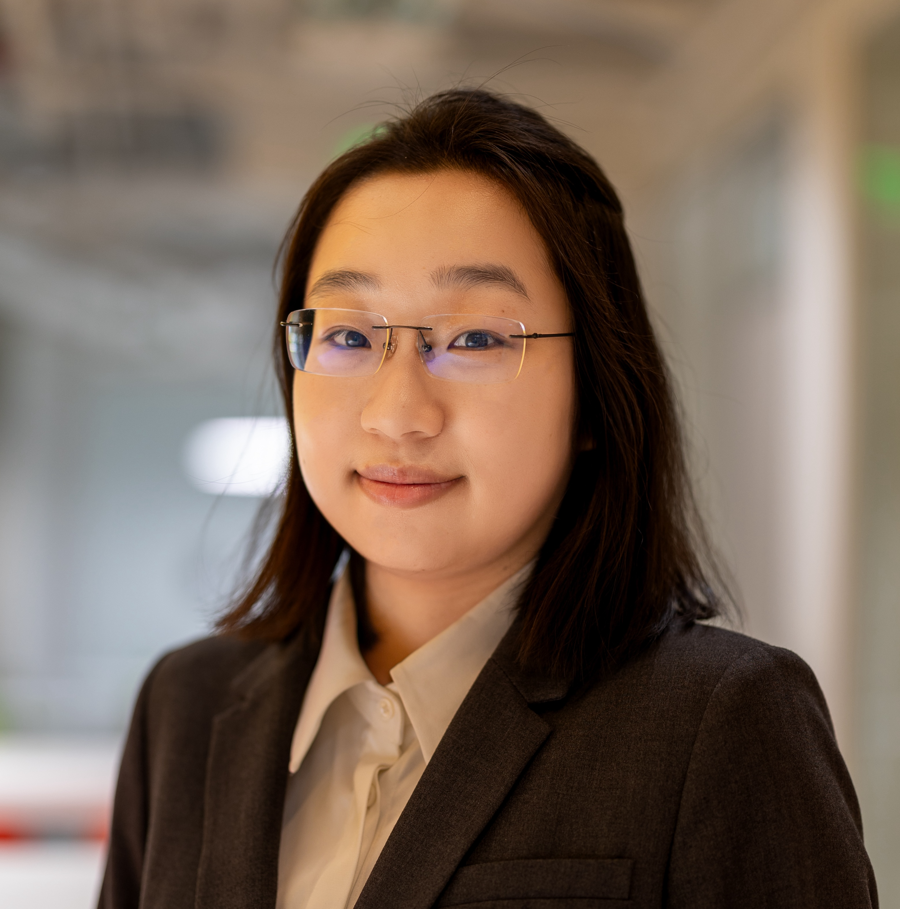

Principal Investigator
Yichun He, Ph.D.
Yichun He is an incoming assistant professor at the Siebel School of Computing and Data Science, University of Illinois Urbana-Champaign, where she will establish He Lab in 2027. She was an Eric and Wendy Schmidt Center Fellow at the Broad Institute of MIT and Harvard, where she worked with Caroline Uhler on causal and multimodal approaches to biology. In 2024, she worked with Aviv Regev as a research intern at Genentech, developing autonomous AI agents for spatial biology and language models for DNA sequence design. Her research develops AI methods to connect molecular, spatial, and functional views of biological systems, with the goal of understanding and improving human health and intelligence. Her work spans spatial atlases, multimodal learning, neural decoding, and AI agents for scientific discovery. She earned her PhD in Engineering Sciences at Harvard University, advised by Xiao Wang, and her bachelor's degree in Electrical Engineering at the University of Science and Technology of China.
Positions
- 2027–Assistant Professor (Incoming)
Siebel School of Computing and Data Science
University of Illinois Urbana-Champaign - 2025–presentEric and Wendy Schmidt Center Fellow
Broad Institute of MIT and Harvard - 2024Research Intern
Genentech Research and Early Development (gRED)
Education
- 2025PhD, Engineering Sciences
Harvard University - 2019BE, Electrical Engineering, summa cum laude
University of Science and Technology of China
Honors and awards
- 2025Eric and Wendy Schmidt Center Fellow, Broad Institute of MIT and Harvard
- 2024NIH/NCI Human Tumor Atlas Network (HTAN) Data Jamboree Travel Award
- 2020–2023James Mills Pierce Fellowship, Harvard University
- 2019Guo Moruo Scholarship, University of Science and Technology of China
- 2019Exceptional Undergraduate of the Class of 2019, University of Science and Technology of China
- 2018Tang Lixin Scholarship
- 2017National Scholarship, Ministry of Education of China